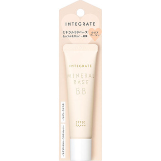
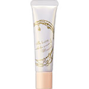

返回列表
产品名称：インテグレート ミネラルベース クリアベージュ

資生堂 インテグレート ミネラルベース クリアベージュ －
メーカー 資生堂
JANコード 4901872338139
商品の特徴
素肌でいるより肌にいい
SPF25・PA＋
ミネラルデークリームBB
1品でナチュラル美肌完成
保湿 UVカット ナチュラルメーク
ナチュラルカバー ミネラルパウダー配合
水は100％ミネラルウオーター
成分・分量
-
用法及び用量
＜使用方法＞
●スキンケアで肌を整えた後に、パール粒1コ分を目安にとり、顔全体にムラなくのばします。
●よくなじませてからファンデーションをつけてください。
●使用量が少ないと、十分な紫外線防御効果が得られません。